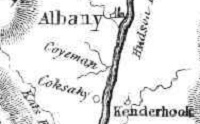

|
"The Coeymans Patent"
by
For our purposes, the Coeymans Patent refers to the large tract of real estate first "purchased" by New Netherland pioneer Barent Pieterse Coeymans in 1672 or 1673. It is located in the present town of Coeymans in southern Albany County - a dozen miles below the city of Albany. Relevant landmarks are the "Coeymans House" and the Coeymans and/or Onesquethaw Creek(s).
Admittedly, this presentation is a simple compilation of materials on the Coeymans Patent. We seek to efficiently define its parameters, identify especially its Albany-based owners, and connect their holdings there to the history of the city of Albany. We are at the beginning of that initiative.

In August 1714, the patent appears to have been conferred on Andries Coeymans - son of Barent Pieterse. Its borders have been described as “the Lands in & near the Manor of Rensselaerswyck . . . Beginning at a creek called Peter Bronck’s creek or the creek of Coxsackie including the same creek, on the west side of Hudsons River thence up along the said River as it runs to over against the middle of Jan Ryersen’s Island to a small run of water, thence from the said River backwards up into the woods W & by N. half a point more northerly 12 English miles being the northern bounds of said land; & the southern bounds beginning at the north of the said Peter Bronck’s creek & thence up the same, including the same as aforesaid, until it comes to Coxsackie, and thence up into the woods by a due west course until it is 12 English miles distant from the mouth of said creek, from the west end of which distance last mentioned a straight line being drawn northerly until it meets and closes with the west end of the aforesaid northerly bounds makes the western bounds thereof, and the easterly bounds thereof in the said River, according to a grant made by Gov. Lovelace April 7, 1673, to said Barent Petersen, and an adjustment of boundaries made by deed dated Oct. 22,1706, between Killan Van Rensselaer, and the said Barent Pietersen and Andries.”
Although the Coeymans Patent appears to have been issued in 1714, not until December 1766 did the provincial Council confirm the originally patented acres to the Coeymans patentees.
From the initial grant through the eighteenth century, members of the Coeymans, Ten Eyck, and Verplanck families appear to have been utilizing the land. Some of them were tied to the city of Albany.
One David Mc Carty is said to have surveyed the patent.
The town of Coeymans was formed from Watervliet in 1791.

notes
This exposition on the patent provides accessible support
for an important corollary to the early Albany story. It considers the
topic in its Albany city context. Virtually all of the descriptive (yet
unverified) material on the patent presented here is from a large but
amorphous body we call Traditional Sources.
The most accessible of them are mentioned below.
Sources: town of Coeymans history; Coeymans Genealogy page includes relevant links.
References to map of 1714 and to subsequent partition (1788).
Detail from the Guy Johnson map of 1771 represents the amorphous perception of the name "Coyeman."
From a gazetteer for 1870 that presents more traditional wisdom: Coeymans: The Indian name of Coeymans Creek was Oniskethau and the flats at Coeymans Hollow were called Achquetuck. Andreas and Lendert whitbeck were early settlers near the Hollow: and Daniel Traver and Balthus Keefer, near Keefer's Corners. John and Thomas Whitbeck settled near Indian Fields. Among the other early settlers were the Verplanks, TenEycks, Vanderveers and David McCarty, who surveyed Coeymans Patent. The first Reformed Protestant Dutch Church was built in 1787, one mile west of Coeymana Landing. The Church was organized March 5th, 1798; Bev. Jacob Sickles was tbe first pastor. History of the "Old Stone Church."
Description of the Coeymans Patent copied from an online transcription of pages the Beers History of Greene County:
In 1673 General Lovelace granted to Barent Pietersen:
“A tract of land on the west side of Hudson’s river to the north of a place by the Indians called Koxhaexy, stretching in length to the highest place where Jacob Flodder did use to roll down his timber, named by the Indians, Siekatoms, to the south of the Island belonging to Jan Reyersen, and into the woods as far as the said Indiana Sachems right goes, as also the wood land, kills, creeds, valleys and meadows, thereunto appertaining without any reservation as purchased by said Barent of the principal Sachems at the Katskill.”
This grant is generally known as Coeyman’s Old Patent. In 1685 a patent was granted to Killian Van Rensselaer which conveyed to him.
“All that tract of land called Rensselaerswyck lying upon the banks of Hudson’s river in the County of Albany, heretofore known by the name of the Colony of Rensselaerswyck. Beginning at the south end or part of Beeren Island in Hudson’s River extending northwards up along both sides of said river, unto a place heretofore called the Kahoos or the Great Falls of the said river, and extending itself east and west all along from each die to the said river backwards into the woods 24 English miles.”
In 1714 Andries Coeymans, son and heir of Brent Pietersen, made application for a new patent of confirmation for the tract of land granted to his father by Governor Lovelace, and in compliance with this application a new patent was granted him August 16th 1714, which conveyed to him as follows:
“The Lands in & near the Manor of Rensselaerswyck, of which his Father died seized & bounded as follows. Beginning at a creek called Peter Bronck’s creek or the creek of Coxsackie including the same creek, on the west side of Hudsons River thence up along the said River as it runs to over against the middle of Jan Ryersen’s Island to a small run of water, thence from the said River backwards up into the woods W & by N. half a point more northerly 12 English miles being the northern bounds of said land; & the southern bounds beginning at the north of the said Peter Bronck’s creek & thence up the same, including the same as aforesaid, until it comes to Coxsackie, and thence up into the woods by a due west course until it is 12 English miles distant from the mouth of said creek, from the west end of which distance last mentioned a straight line being drawn northerly until it meets and closes with the west end of the aforesaid northerly bounds makes the western bounds thereof, and the easterly bounds thereof in the said River, according to a grant made by Gov. Lovelace April 7, 1673, to said Barent Petersen, and an adjustment of boundaries made by deed dated Oct. 22,1706, between Killam Van Rensselaer, and the said Barent Pietersen and Andries.”
Beeren Island is the small rocky island below Coeyman’s Landing, and as the north bounds of the tract granted to Barent Pietersen were far beyond this, it will be seen that Van Rensselaer’s patent encroached upon it and made a tract of disputed lands. The contest which then arose between the parties claiming the land in dispute was settled by Killiam Van Rensselaer’s giving to Andries Coeymans a deed releasing to him all his right and title to the whole trace. This deed is referred to in the patent granted to Coeymans in 1714, and is recorded in book H of deeds, page 209, in the county clerk’s office at Albany.
In those early days large grants of land were frequently made, with boundaries that encroached upon prior patents or grants. In such cases the earliest grant was generally sustained, and, as land was of little value, one
of the parties generally bought the claims of the others. The patent
granted to Peter Bronk was of earlier date than any other in the part
of the country. The north boundary, being a line running west from
the south side of the mouth of Coxsackie Creek to the Indian footpath,
was established by arbitration, as stated in a description of the
12th allotment of Coeyman’s Patent, contained in the field book of
the survey and division, in the county clerks office in Albany. The
place which the Indians called Coxsackie was undoubtedly at the upper
village, and a line running west from the bridge over the creek was
always considered the south boundary of Coeyman’s Patent. That the
land between the bridge and the Catskill Path was a part of the Bronk
Patent was never disputed.
Notes copied and adapted from an online posting by Barbara from Bethlehem, February 27, 1999 via Rootsweb:
Some excerpts [unattributed] from Coeymans and the Past by Edward D. Giddings, 1973; Published by the Tri-Centennial Committee of Coeymans:
[pg 9] "On April 8, 1630, Killian VanRensselaer, through his agents, purchased land in the Coeymans area from the Indians . . The land to the west of Albany was under the domination of the Iroquois or the League of Five Nations, which spread across the state from Schenectady to the Genesee River area, about 150 miles.
Indian Deed - Sachamoes and Others to Jan Clute and Others, April 20, 1665 granted practically all of Bronck Patent at Coxsackie and part of Coeymans Patent up to the Patroonship line.
Letters Patent. Gov Francis Lovelances, Esq. to Barent Peirtersen (Coeymans), April 7, 1673. (orig Coeymans patent).
Petition - Barent Pieterse Coeymans to Gov. Edward Viscount Cornbury, March 23, 1703, asks for royal and well as gubernatorial confirmation of grant.
Petition - Barent Pieterse Coeymans to Edward Viscount Cornbury, May 10, 1704, much the same as above.
Indian Deed - Masghakimnenaw and Others to Barent Piertse Coeymans,
Aug 22, 1704. Repeats the original Indian grant of 1665 to Coeymans
Petition - Killian VanRensselaer to Edward Viscount Cornbury, November 6, 1704. The Patroons side of the case
Petition - Andries Coeymans (Barent was dead and Andries was the oldest son) to Gov Robert Hunter, Esq., Aug 3, 1714. Urging royal confirmation of the Patent.
Note: The copied materials posted above are residing on this page for ease of encounter and will be incorporated then removed. My apologizies for this convention.
Follow this link to more tidbits on the Coeymans Patent on this website.
Home | Site Index | Navigation | Email | New York State Museum
first posted 9/29/13; updated 3/14/16
|